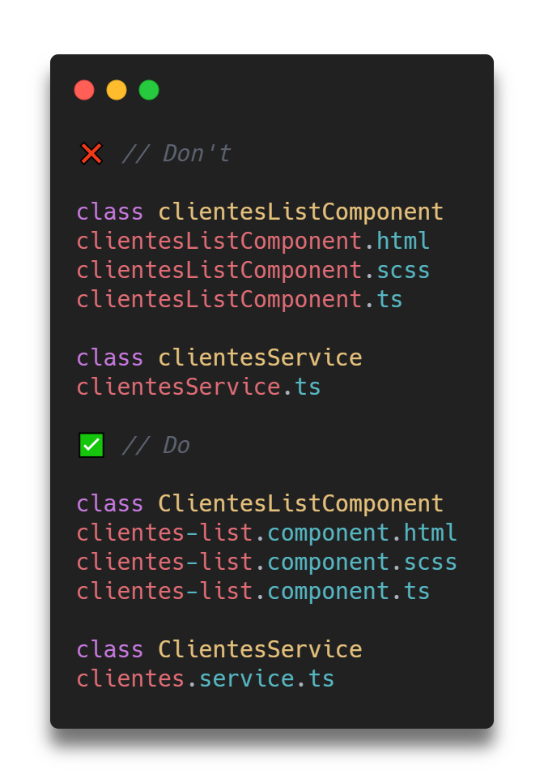

1.0 Sempre nomeie os arquivos usando lowercase, e se necessário, separe as palavras com dash -. A nomenclatura de classes deve seguir o mesmo nome do arquivo, porém no estilo UpperCamelCase.

1.0 Sempre nomeie os arquivos usando lowercase, e se necessário, separe as palavras com dash -. A nomenclatura de classes deve seguir o mesmo nome do arquivo, porém no estilo UpperCamelCase.
1.1 Use semicolon ; em todo fim de statement. Não usar em caso de: if, methods, functions, classes.
1.2 Use camelCase para nomear variáveis, propriedades, funções e métodos.
1.3 Use UpperCamelCase para nomear classes.
1.4 Nunca use var. Use let.
1.5 Use caixa alta para nomear constantes.
1.6 Todo o projeto deve ser escrito em inglês, salvo aos nomes-chave que sejam referentes ao negócio do cliente.
1.7 Nunca crie múltiplas variáveis de uma só vez.
1.8 Nunca crie variáveis de forma non-literal.
1.9 Qualquer variável ou parametro que seja do tipo String, deve ser usada aspas simples '.
1.10 Sempre que usar comparações, use sempre os 3 signal para verificação de valor e tipo: === e !==.
1.11 Use sempre o Handler de erros global para tratar erros de resposta do servidor.
2.0 Use sempre template strings caso haja variáveis dentro de um texto.
3.0 Identação.
3.1 Use o cloneObject global do Helpers para clonar objetos.
3.2 Use os objects methods syntax para criação de funções dentro do objeto.
3.3 Use quando necessário o Object Destructor a fim de evitar a criação de variáveis desnecessárias.
3.4 Use sempre o laço for...in para iterar objetos.
4.0 Identação.
4.1 Use o spread operator para clonar listas.
4.2 Use quando necessário o Array Destructor a fim de evitar a criação de variáveis desnecessárias.
4.3 Para alterar ou criar valores em uma lista, use sempre a API de iteração de laços do ES6: .map() para iterar, .filter() para filtrar, .reduce() para realizar cálculos matemáticos.
4.4 Nunca use o laço for convencional para iterar listas. Use sempre for...of ou .forEach()
5.0 Identação.
5.1 Quando for explicar como o código funciona, sempre coloque o comentário acima da linha explicada.
6.0 Sempre verifique se é realmente necessário o uso de Spread Operator.
7.0 Identação.
7.1 Identação (2).
7.2 Nunca re-atribua parâmetros da função.
7.3 Quando possível e tendo em mente o escopo do this, sempre utilize as arrow functions.
8.0 Bloco If.
8.1 Bloco If com múltiplas condições.
8.2 Espaçamento If e Functions.
8.3 Em um Objeto, sempre coloque os parâmetros non-methods primeiro e dê um espaço cima-baixo para os métodos.